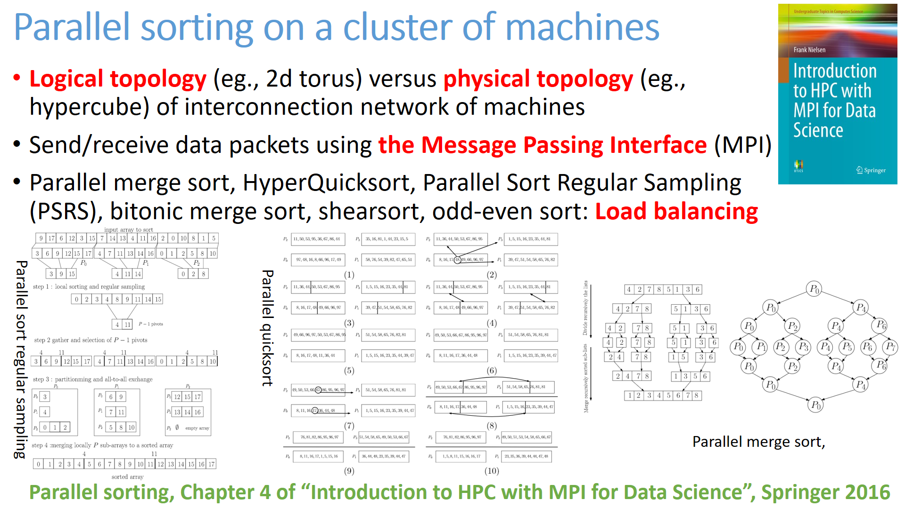
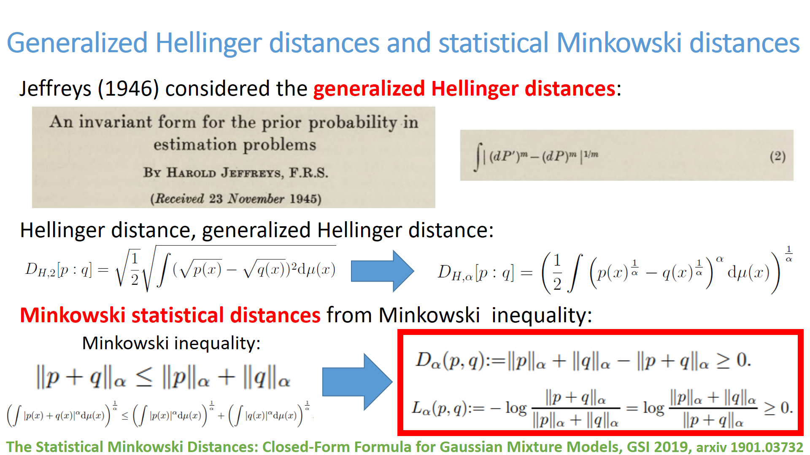
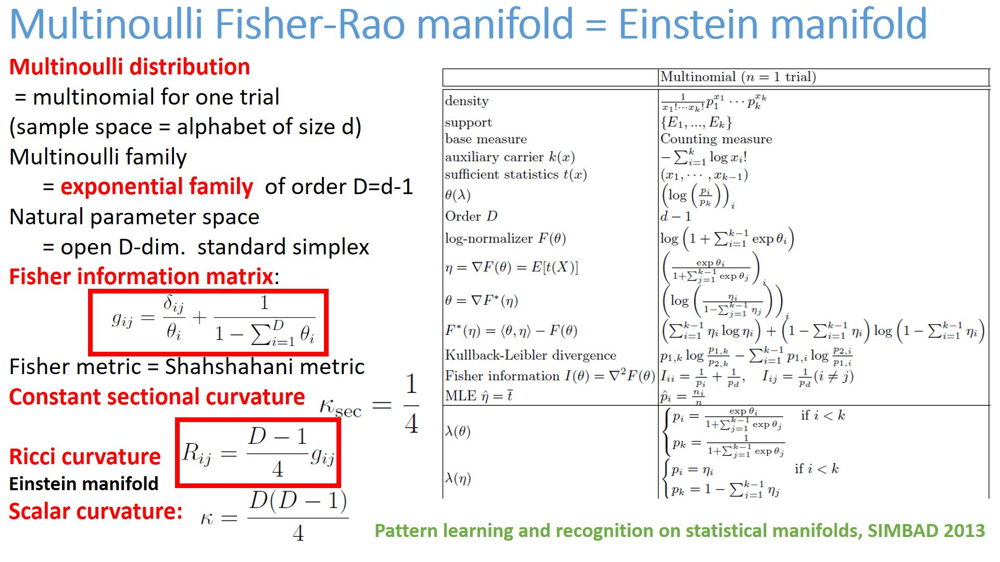
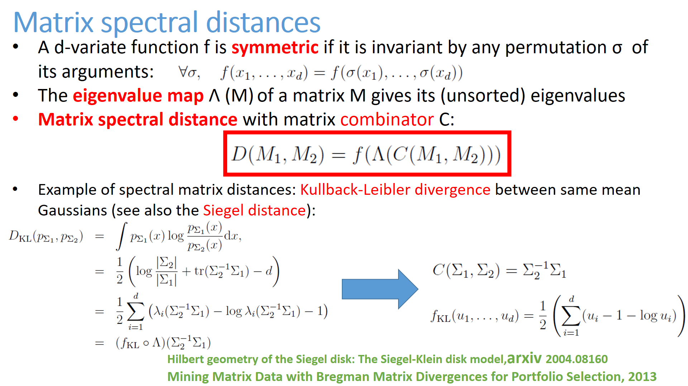

<h1>List of cards</h1>
 Click on a card and then browse previous/next card from that card.<BR>25 cards per page<BR>Card order is a random permutation.<ul><LI><A HREF="C:/Travail/WWWGitHubFrankNIELSEN/FrankNielsen.github.io/Cards/card-75.html" target="_blank"></HREF></LI>

<LI><A HREF="C:/Travail/WWWGitHubFrankNIELSEN/FrankNielsen.github.io/Cards/card-76.html" target="_blank"></HREF></LI>

<LI><A HREF="C:/Travail/WWWGitHubFrankNIELSEN/FrankNielsen.github.io/Cards/card-77.html" target="_blank"></HREF></LI>

<LI><A HREF="C:/Travail/WWWGitHubFrankNIELSEN/FrankNielsen.github.io/Cards/card-78.html" target="_blank"></HREF></LI>

<LI><A HREF="C:/Travail/WWWGitHubFrankNIELSEN/FrankNielsen.github.io/Cards/card-79.html" target="_blank"></HREF></LI>

<LI><A HREF="C:/Travail/WWWGitHubFrankNIELSEN/FrankNielsen.github.io/Cards/card-80.html" target="_blank"></HREF></LI>

<LI><A HREF="C:/Travail/WWWGitHubFrankNIELSEN/FrankNielsen.github.io/Cards/card-81.html" target="_blank"></HREF></LI>

<LI><A HREF="C:/Travail/WWWGitHubFrankNIELSEN/FrankNielsen.github.io/Cards/card-82.html" target="_blank"></HREF></LI>

<LI><A HREF="C:/Travail/WWWGitHubFrankNIELSEN/FrankNielsen.github.io/Cards/card-83.html" target="_blank"></HREF></LI>

<LI><A HREF="C:/Travail/WWWGitHubFrankNIELSEN/FrankNielsen.github.io/Cards/card-84.html" target="_blank"></HREF></LI>

<LI><A HREF="C:/Travail/WWWGitHubFrankNIELSEN/FrankNielsen.github.io/Cards/card-85.html" target="_blank"></HREF></LI>

<LI><A HREF="C:/Travail/WWWGitHubFrankNIELSEN/FrankNielsen.github.io/Cards/card-86.html" target="_blank"></HREF></LI>

<LI><A HREF="C:/Travail/WWWGitHubFrankNIELSEN/FrankNielsen.github.io/Cards/card-87.html" target="_blank"></HREF></LI>

<LI><A HREF="C:/Travail/WWWGitHubFrankNIELSEN/FrankNielsen.github.io/Cards/card-88.html" target="_blank"></HREF></LI>

<LI><A HREF="C:/Travail/WWWGitHubFrankNIELSEN/FrankNielsen.github.io/Cards/card-89.html" target="_blank"></HREF></LI>

<LI><A HREF="C:/Travail/WWWGitHubFrankNIELSEN/FrankNielsen.github.io/Cards/card-90.html" target="_blank"></HREF></LI>

<LI><A HREF="C:/Travail/WWWGitHubFrankNIELSEN/FrankNielsen.github.io/Cards/card-91.html" target="_blank"></HREF></LI>

<LI><A HREF="C:/Travail/WWWGitHubFrankNIELSEN/FrankNielsen.github.io/Cards/card-92.html" target="_blank"></HREF></LI>

<LI><A HREF="C:/Travail/WWWGitHubFrankNIELSEN/FrankNielsen.github.io/Cards/card-93.html" target="_blank"></HREF></LI>

<LI><A HREF="C:/Travail/WWWGitHubFrankNIELSEN/FrankNielsen.github.io/Cards/card-94.html" target="_blank"></HREF></LI>

<LI><A HREF="C:/Travail/WWWGitHubFrankNIELSEN/FrankNielsen.github.io/Cards/card-95.html" target="_blank"></HREF></LI>

<LI><A HREF="C:/Travail/WWWGitHubFrankNIELSEN/FrankNielsen.github.io/Cards/card-96.html" target="_blank"></HREF></LI>

<LI><A HREF="C:/Travail/WWWGitHubFrankNIELSEN/FrankNielsen.github.io/Cards/card-97.html" target="_blank"></HREF></LI>

<LI><A HREF="C:/Travail/WWWGitHubFrankNIELSEN/FrankNielsen.github.io/Cards/card-98.html" target="_blank"></HREF></LI>

<LI><A HREF="C:/Travail/WWWGitHubFrankNIELSEN/FrankNielsen.github.io/Cards/card-99.html" target="_blank"></HREF></LI>

</ul><BR> <A HREF="index3.html">Previous card page</A>&nbsp;&nbsp;&nbsp; <A HREF="index5.html">Next card page</A>
